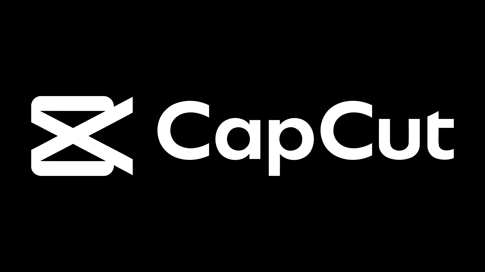
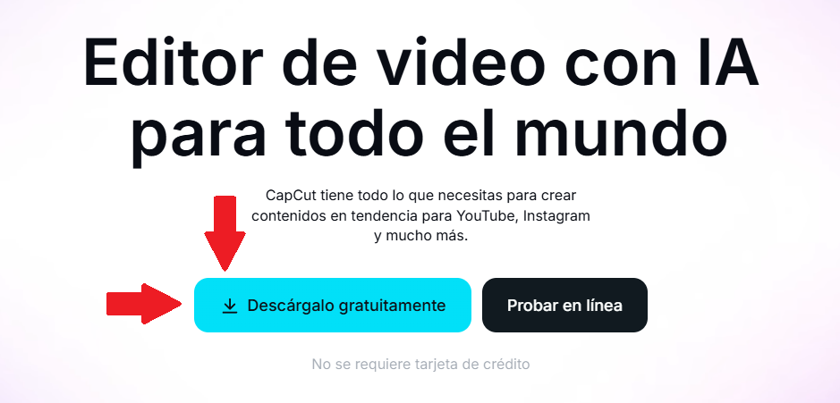
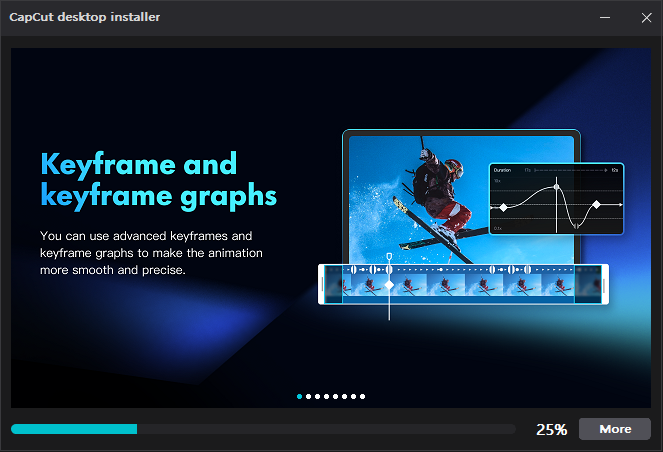
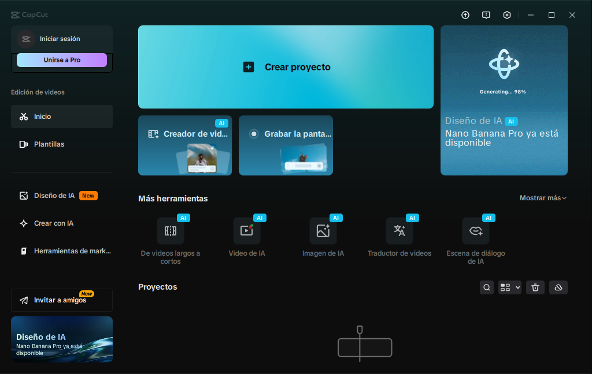

¡Descargá e instalá CapCut, un editor de video gratuito!
CapCut es un editor de video gratuito y fácil de usar, muy popular tanto en computadoras como en
dispositivos móviles. Es ideal para crear y editar videos rápidamente, sin necesidad de
tener muchos conocimientos de edición.

Este programa, permite cortar clips, agregar efectos, transiciones, texto, música y filtros de
manera sencilla. Tiene una interfaz intuitiva y está pensada para principiantes y para usuarios
que buscan resultados rápidos y de buena calidad.
Es una herramienta muy utilizada para crear contenido para redes sociales, presentaciones o
proyectos personales.
Cómo instalar CapCut en tu computadora
Paso 1: Descargar CapCut
Lo primero que tenemos que hacer es descargar el instalador de CapCut desde su sitio web oficial.

Le damos clic donde dice "Descárgalo gratuitamente", y se nos descargará el instalador del
programa.
Paso 2: Instalar CapCut
El proceso de instalación es bastante simple. Una vez descargado el archivo, debemos ejecutar el
instalador que acabamos de descargar y esperar a que se instale el programa.

Paso 3: Abrir CapCut y comenzar a editar
Al terminar la instalación, CapCut se nos abrirá automáticamente o podremos iniciarlo desde el
acceso directo del escritorio para poder empezar a crear nuevos proyectos y editar.

¿Es recomendable utilizar CapCut?
Sí, ya que es una herramienta gratuita fácil de usar y con funciones suficientes
para la mayoría de los usuarios.
Es un programa que permite obtener resultados profesionales
sin tantas complicaciones, lo que lo convierte en una muy buena opción para aquellos que van
iniciando con la edición de video.